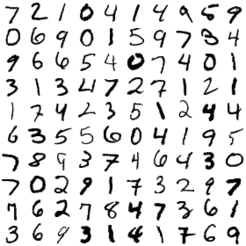
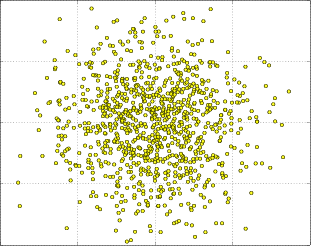
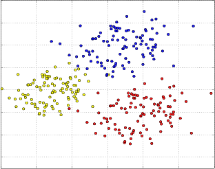

Module rustml::datasets
[−]
[src]
Module to easily access popular datasets often used to measure the performance of machine learning algorithms.
The image on the left shows an example of 200 handwritten digits from the MNIST database of handwritten digits. Rustml provides a simple interface via MnistDigits to easily access those digits. The MNIST database comes with 60,000 examples in a training set and 10,000 examples in a test set. The image has been created with rustml with just a few lines of code. See the example here.
The image in the middle shows an example of 1000 points normally distributed with the mean at (1, 2) and a standard deviation of 0.3 for the first dimension and 0.4 for the second dimension.
The image on the right shows a mixture model. A dataset which consists of three sources which are normally distributed with different parameters.



Structs
| Mixture |
Generates random multi-dimensional data points (a population) from different normally distributed sources (subpopulations). |
| MnistDigits |
This structure offers access to the MNIST database of handwritten digits. |
| NormalData |
Generates multi-dimensional data where each dimension is normally distributed. |
Functions
| mixture_builder |
Creates a mixture model with normally distributed data sources. |
| normal_builder |
Creates a normally distributed data source. |